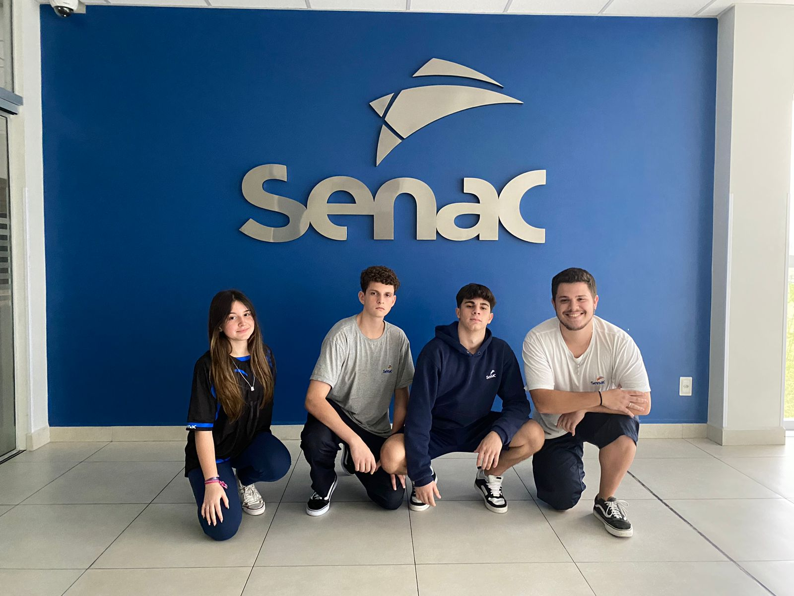

Zaily-Br
1° Ano Informática - 2023

ㅤOlá! Bem-vindo ao nosso site. Nós somos uma equipe composta por Miguel Lima, Maria Castro, Gabriel Augusto e Felipe Ponick, quatro estudantes do primeiro ano do curso de Informática no SENAC. Estamos aqui para compartilhar nosso entusiasmo pelo mundo da tecnologia e as habilidades que estamos ganhando durante o curso. Na equipe, Miguel Lima e Maria Castro são os nossos programadores, trabalhando incansávelmente nos códigos e desenvolvimento de software. Gabriel Augusto e Felipe Ponick, por outro lado, concentram-se na documentação, edição de conteúdo e seleção das melhores imagens para dar vida aos nossos projetos. Sinta-se à vontade para explorar nosso site, conhecer nossos projetos e entrar em contato conosco se tiver alguma pergunta ou sugestão. Obrigado por nos visitar e fazer parte de nossa trajetória no mundo da programação!